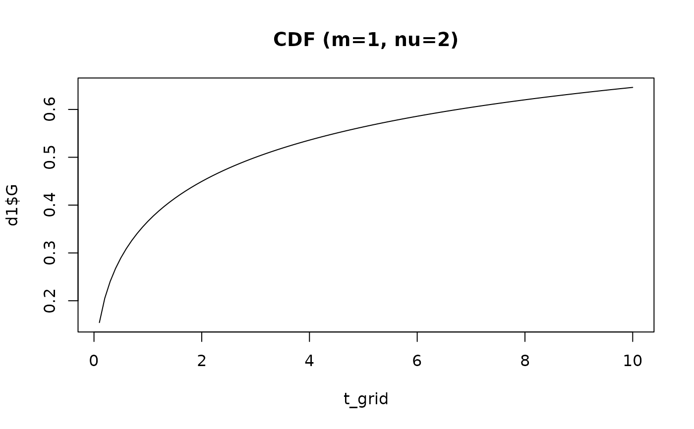

Computes the cumulative distribution \(G(t)\), density \(g(t)\), and hazard \(h(t) = g(t)/(1 - G(t))\) for the parametric family defined by half-life, time exponent, and shape. This single function generates all temporal phase shapes used in multiphase hazard models.
Arguments
- time
Numeric vector of times (must be > 0).
- t_half
Half-life: time at which \(G(t_{1/2}) = 0.5\). Must be > 0.
- nu
Time exponent controlling rate dynamics. SAS early:
NU. SAS late: relates toGAMMA/ETA.- m
Shape exponent controlling the distributional form. SAS early:
M. SAS late: relates toGAMMA/ALPHA.
Value
A named list with three numeric vectors, each the same length
as time:
- G
Cumulative distribution \(G(t) \in [0, 1]\).
- g
Density \(g(t) = dG/dt \ge 0\). The "early" phase temporal pattern.
- h
Hazard \(h(t) = g(t)/(1 - G(t)) \ge 0\). The "late" phase temporal pattern.
Parameter mapping from SAS/C HAZARD
The original C code used separate parameterizations for early (DELTA,
RHO/THALF, NU, M) and late (TAU, GAMMA, ALPHA, ETA) phases. Both
collapse onto the three parameters here. See
hzr_argument_mapping() for the full translation table.
Valid parameter combinations
Six cases are defined by the signs of nu and m:
| Case | Sign | Behavior |
| 1 | m > 0, nu > 0 | Standard sigmoidal |
| 1L | m = 0, nu > 0 | Exponential-like (Weibull CDF) |
| 2 | m < 0, nu > 0 | Heavy-tailed |
| 2L | m < 0, nu = 0 | Exponential decay |
| 3 | m > 0, nu < 0 | Bounded cumulative |
| 3L | m = 0, nu < 0 | Bounded exponential |
The combination m < 0 and nu < 0 is undefined and raises an error.
References
Blackstone EH, Naftel DC, Turner ME Jr. The decomposition of time-varying hazard into phases, each incorporating a separate stream of concomitant information. J Am Stat Assoc. 1986;81(395):615–624. doi:10.1080/01621459.1986.10478314
Rajeswaran J, Blackstone EH, Ehrlinger J, Li L, Ishwaran H, Parides MK. Probability of atrial fibrillation after ablation: Using a parametric nonlinear temporal decomposition mixed effects model. Stat Methods Med Res. 2018;27(1):126–141. doi:10.1177/0962280215623583
See also
hzr_phase_cumhaz() for the phase-level cumulative hazard
contribution, hzr_argument_mapping() for SAS/C parameter mapping,
hzr_phase() for specifying phases in hazard() models.
vignette("mf-mathematical-foundations") for the full derivation.
Examples
t_grid <- seq(0.1, 10, by = 0.1)
# Case 1: standard sigmoidal (m > 0, nu > 0)
d1 <- hzr_decompos(t_grid, t_half = 3, nu = 2, m = 1)
plot(t_grid, d1$G, type = "l", main = "CDF (m=1, nu=2)")

# Case 1L: Weibull-like (m = 0, nu > 0)
d1L <- hzr_decompos(t_grid, t_half = 3, nu = 2, m = 0)
# Case 2: heavy-tailed (m < 0, nu > 0)
d2 <- hzr_decompos(t_grid, t_half = 3, nu = 2, m = -1)